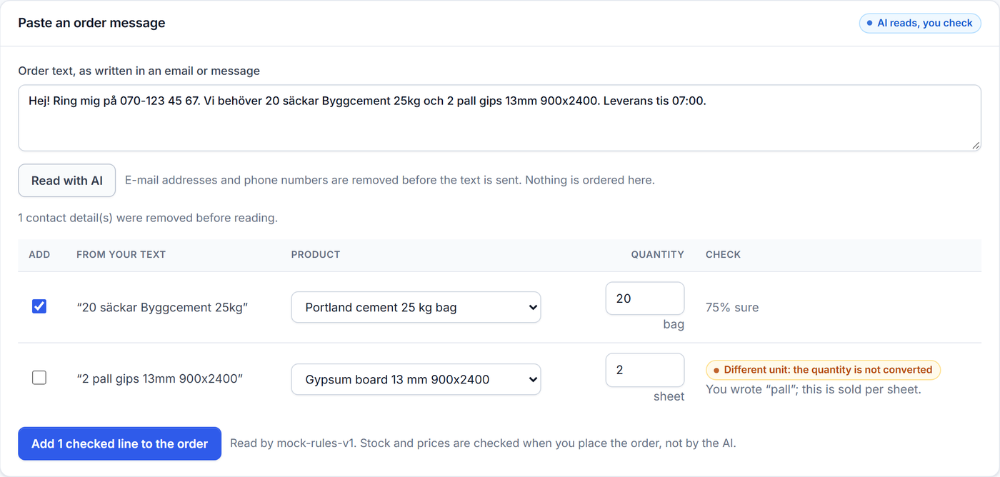
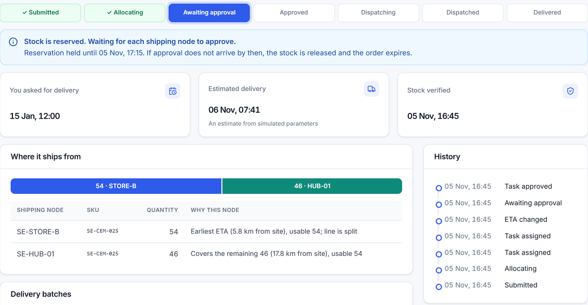
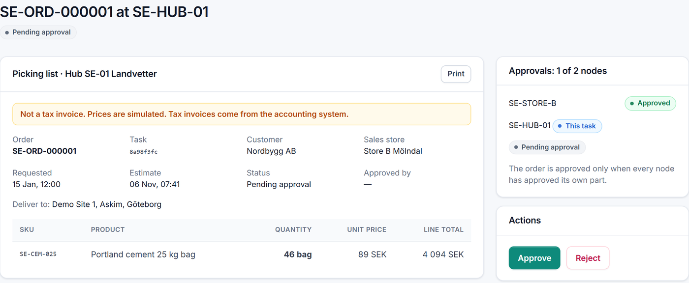
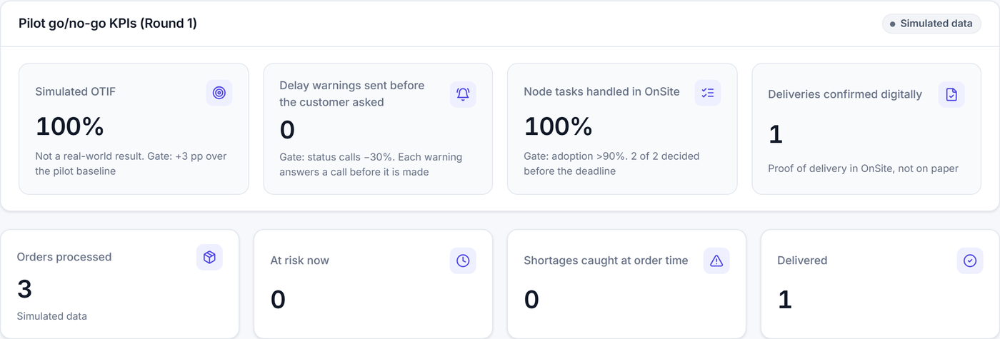

Erik, site manager at Nordbygg AB, needs cement and gypsum board for a project in Askim, Gothenburg. The MVP demonstrates this complete journey across the Round 1 pilot region: 10 stores and one hub in Sweden, using simulated data.
The Round 1 delivery problem becomes most visible when something goes wrong. Each scenario below is implemented in the MVP and covered by automated tests.
| Moment | Before OnSite | With OnSite (MVP) |
|---|---|---|
| Placing the order | E-mail re-keyed by store staff | Text read into draft lines; the customer confirms each one |
| Is it in stock? | Staff check 11 locations one by one | One consolidated answer across all nodes, net of a 10% buffer |
| Not enough stock | Found at loading, next morning | Found while ordering; accept what is available or cancel |
| Two locations needed | Staff coordinate by phone | Rules-based split with the reason shown; each node approves its allocation |
| A store goes offline | Order silently stuck there | Isolated after 5 min; work moved to the next node |
| "Where is my delivery?" | ~3 internal calls and ~20 min for an answer | Live ETA and a proactive warning before the customer needs to call |
| At delivery | Paper note and disputes | Quantity recorded by shipment; any short delivery is visible |
| Did the pilot work? | No shared evidence | Central reports OTIF, proactive warnings and adoption from privacy-filtered events |
AI supports order intake only; deterministic rules control stock, routing, reservations and ETAs. All MVP figures are simulated. The "before" column comes from the Round 1 analysis (Thunberg & Persson 2014 and stated team assumptions), not measurements from this MVP.
The same journey in the MVP



